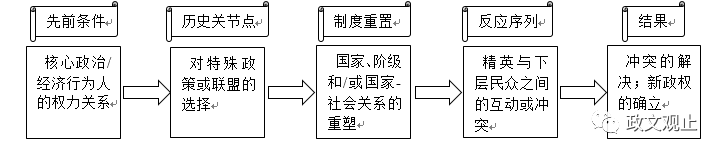

詹姆斯·马洪尼：路径依赖视角下中美洲的政体变迁
收录于合集

作者简介：詹姆斯·马洪尼（James Mahoney），美国西北大学政治学系与社会学系教授，社会学系主任，美国政治学会（APSA）委员会委员，曾在美国政治学会及美国社会学会中的四个分会担任主席，研究领域涉及拉美政治、发展研究以及定性与多元方法论等。
『本文是马洪尼初出茅庐时的作品，论述了路径依赖理论在中美政治发展中的应用，并进而扩展到比较- 历史社会学领域。作者在其博士论文基础上形成的第一部著作《自由主义的遗产》系统阐述了这一议题。该书荣获美国社会学会比较- 历史社会学分会巴林顿·摩尔最佳著作奖，这也是比较历史社会学领域的最高奖项。』
本文提出的问题是：中美洲五国（危地马拉、萨尔瓦多、尼加拉瓜、洪都拉斯、哥斯达黎加）为何会在二十世纪中叶展现出不同的政体形态。作者认为，19世纪自由化改革时期不同国家的差异性选择是理解日后政体分野的关键。
一、路径依赖范式的分析要件
在文章的开始，作者首先介绍了路径依赖范式的分析要件，包括：
历史关节点 （Critical Juncture）：历史关节点的定义由两部分组成：首先，在历史关头存在两个或两个以上的选择，单一选择不构成历史节点；其次，一旦特定的选择被采用，即便其后多种选择依旧可能，但是历史进程却很难回到原初起点。
制度重置 （Institutional Reproduction）：路径依赖的一个核心特征在于，历史关节点的决策一旦做出，事件将沿着特定的轨迹发展，因为关键时刻导致了固化且不易改变的制度模式，这个过程可能锁入（lock in）在一个进程之中而很难加以改变。
反应序列 （Reactive Sequence）：一个包含时间序列和因果事件的链条，在可预测的动态反应中通过一个事件触发下一份事件从而构建“时间事件们的固有逻辑”，这种序列一端连接历史关节点，另一端连接已经远离初试状态的最终结果。

二、中美政体变迁的实证研究
接下来，作者对中美洲五国进行路径依赖的解释。作者认为19世纪以及20世纪早期的自由化改革是中美洲政治发展的关键时刻。在这一时期，掌握国家权力的精英采取了一系列自由化改革措施，其中最为核心的是如何实现经济的发展，尤其是农业的转型。自由化改革之前，绝大部分的土地为国家或地方团体所占有，各国改革的一个结果就是将公有土地转为私人所有。在促进商品农作物和农业发展的过程中，改革者们秉持了或激进主义或改良主义的态度，二者在三个方面体现差异：私有化的范围、私有化的程度以及政策的执行能力。以此三个维度划分，危地马拉、萨尔瓦多、尼加拉瓜选择了激进主义的改革，而洪都拉斯、哥斯达黎加选择了改良主义的的改革。
那么，为什么国家在改革时期会做出不同的选择，即是什么因素构成了历史关节点的先前条件（antecedent conditions）。相关研究存在两种竞争性解释：有学者认为，这与土著居民的数量有关，高密度的土著人口会导致激进主义，反之则选择改良主义，但是比哥斯达黎加人口低密度低的尼加拉瓜却选择激进的改革，故而此解释在整个中美洲的范围缺乏解释力；第二种竞争性解释聚焦于经济发展状况，认为社会经济现代化的培育资产阶级，他们更倾向于激进的自有化改革，然而，萨尔瓦多尼加拉瓜在19世纪70年之前的现代化程度有限，资产阶级力量弱小，该国家却采取了激进主义改革。
作者提出了自己的解释：政治威胁。激进改革的的国家，危地马拉、萨拉瓦多、尼加拉瓜面临这严重的政治威胁，这导致统治急需建立强大的军队，因此及至改革开启，国家具有足够的强制力量扫清障碍；而在洪都拉斯和哥斯达黎加统治者们并没有遇到高程度的政治威胁，因此国家强制能力较弱，这使得他们无法实行激进改革反而选择了一种更加温和的态度。
不同的政策选择重构了国家的制度与阶级结构，到20世纪20年底自由主义改革接近尾声时，中美洲五国展现出了三种风格迥异的自由主义发展模式：危地马拉和萨尔瓦多的激进自由主义、哥斯达黎加的改良自由主义以及洪都拉斯和尼加拉瓜的失败的自由主义。不同的发展类型在以下六个方面展现出差异：商业农业的大规模扩张，国际市场的参与，拥有巨大权力的土地精英的出现，集权的国家机构的出现，两极分化的农村阶级结构的出现，强大的军事专制机构的出现。值得注意的是，美国的入侵打断了洪都拉斯和尼加拉瓜自由化改革的进程。
三种不同的自由主义模式造就了日后不同的政体类型，自由改革后是否经历“民主化插曲”以及“民主化插曲”是否成功导致了国家的类型的最终差异。“民主化插曲”是指如下层阶级进入政治舞台，增加选举自由、增加社会经济平等政治行为的发生。30年代的哥斯达黎加的城市中产阶级、中小型咖啡种植者和城市工人阶级要求开放竞争选举的范围不断扩大，这为40年代改革积累了资源准备，到民主化插曲时工人阶级被纳入执政联盟，社会保障立法得以确立，为之后福利国家奠定了基础；危地马拉和萨尔瓦多虽然经历了民主化的插曲，但遇到了强大军事力量的阻碍，军方推翻了改革政府而进入军政府的时代；洪都拉斯和尼加拉瓜甚至没有经历民主化的插曲，因为半殖民地现状已经给民主化关上了大门，国内的行动者已经完全丧失了对经济的控制权。
最终，在激进的自由主义中产生了军事威权政体（危地马拉、萨尔瓦多），改良自由主义的模式孕育了现代民主政体（哥斯达黎加），失败自由主义的结果则是传统独裁政体（洪都拉斯、尼加拉瓜）。

三、路径依赖的一般模式
在结束对中美洲五国的实证研究之后，作者将视野放置到了其他有关政体变迁的经典文献，试图通过将他们的对比以此总结出路径依赖在解释政体变迁时的一般模式。作者选择的著作包括摩尔（Barrington Moore）：《专制与民主的社会起源》（ Social Origins of __Dictatorship and Democracy ）；鲁施迈耶等（Rueschemeyer, Stephens, and Stephens）：《资本主义发展与民主》 Capitalist __Development and Democracy ）；鲁伯特（Gregory M.Luebbert）：《自由主义、法西斯主义或社会民主主义》（ Liberalism, Fascism, and Social __Democracy ）；科利尔夫妇（Collier and Collier）：《型塑政治场域》（ Shaping the Political Arena ）。由于对以上文献的充分认识需要丰富的知识背景，因此我们直接跳过作者对几本著作的比较，直接跨到作者所总结出的路径依赖对政体变迁的一般性解释模型：


参考文献：
James Mahoney, " Path-Dependent Explanations of Regime Change: Central America in Comparative Perspective," Studies in Comparative International Development, Spring 2001, Vol. 36, No. 1, pp. 111–141
编后记 ：以上这篇论文发表于2001年，此时的马洪尼仅为布朗大学社会学系助理教授，但这丝毫无法掩盖作者严谨的态度与智慧的光芒（或许这也正是比较政治学研究者需要兼具的Passion,Craft and Method）。尤其是作者于2000年在《理论与社会》（ Theory and Society ）发表的《历史社会学中的路径依赖》一文，更是昭示了马洪尼不可限量的学术前途（Path Dependence in Historical Sociology亦是马洪尼单篇引用率最高的文献）。日后戈德斯通评价道，马洪尼在比较- 历史方法上“可能是他们这一代中最杰出的社会学学者”（这一评价在美国政治学界同样适用）。
在本次的引介中，我们主要论述了作者关于中美的实证研究，至于比较历史分析的发展脉络与方法论特征我们会在之后的文章中陆续介绍。在美国社会科学界，一个研究领域的确立必须以一定的议题尤其是独特的方法所支撑——这恐怕也是国内学者所批评的方法论至上主义。但是在这种学术环境下，方法论的确立就尤为重要了。于是，在比较历史分析（Comparative Historical Analysis，简称CHA）的谱系中，斯考切波与马洪尼的意义显得非比寻常。斯考切波承续乃师摩尔的道统，在《国家与社会革命》一书中明确提出了比较历史分析的研究路径，在之后的《历史社会学的视野与方法》中，进一步强化了她所推崇的历史社会学的第三种研究路径——在偶然性中发现历史的因果规律。在这种努力下，及至90年代CHA领域出现了一批经典著作，Collier、Ruschemeyer、Luebbert、Downing、Ertman等人的作品正是其中的代表。到了21世纪，马洪尼继续其偶像斯考切波的事业，2003年与鲁施迈耶合编的《社会科学中的比较历史分析》一书正是确立了CHA的学术地位。方法论的进一步整合所带来的是新一批具有学术影响力学者与作品的出现，包括James Mahoney在内，Dan Slater、Daniel Ziblatt、Giovanni Capoccia、Steven Levitsky等学界新锐用他们的智慧和辛勤继续推动比较历史分析的事业一路向前。
对于比较历史分析的未来，我们同斯考切波一样充满信心：The future will be very bright indeed
点击阅读原文